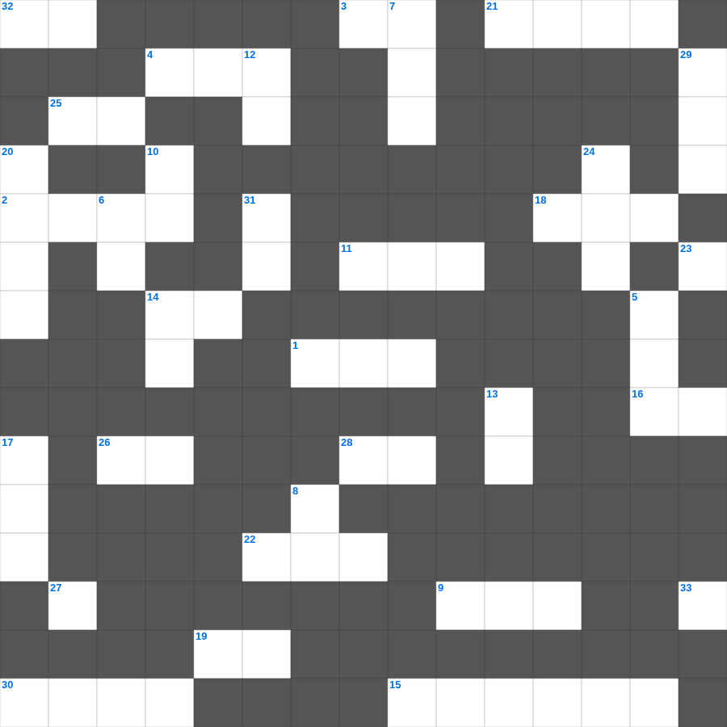

전도서 마스터 100 (2/2)
📌 서비스 정의
십자가로세로는 교회 주보와 주일학교에서 사용할 수 있는 성경 기반 가로세로 퍼즐 서비스입니다. 성경 인물, 사건, 핵심 구절을 바탕으로 제작되었습니다. 온라인 풀이 및 인쇄 기능을 제공합니다.
📖 전도서란?
전도서는 "헛되고 헛되다"는 선언으로 시작하여, 인생의 모든 수고와 즐거움의 허무함을 탐구한 뒤 하나님을 경외하는 것이 참된 결론임을 가르치는 책입니다.
📚 전도서의 주요 사건·주제
인생의 헛됨에 대한 탐구 · 지혜와 쾌락의 한계 · 때를 따라 일어나는 일들(범사에 기한) · 수고와 재물의 헛됨 · 하나님을 경외하라는 결론
오늘은 전도서의 주요 내용을 담은 전도서 성경퀴즈를 준비했습니다. 총 35개의 힌트가 있으며, 주일학교 교재나 성경공부 자료로 활용하기 좋습니다. 무료로 즐기는 전도서 가로세로 퍼즐을 지금 바로 풀어보세요!

📝 가로 힌트
1. 재앙이 넘어갔다는 뜻의 절기
2. 다윗이 사울의 생명을 해치지 않은 이유 '여호와의 이것 받은 자'
3. 그러므로 형제들아 주께서 강림하시기까지 이것 참으라
4. 그레데인 중의 어떤 이것이 말하되 그레데인들은 항상 거짓말쟁이며 악한 짐승이며 배만 위하는 게으름뱅이라 하니
9. 땅에서 올라온 또 다른 짐승: 이것 같이 두 뿔이 있고 용처럼 말하더라
11. 증거궤 위를 덮는 뚜껑
14. 베드로전서 1장 22절: 마음으로 뜨겁게 서로 무엇하라
15. 지붕을 뚫고 내려온 병자를 고치신 사건
16. 믿음으로 모든 세계가 하나님의 이것으로 지어진 줄을 우리가 아나니
18. 모세가 애굽 사람을 죽이고 도망간 땅
19. 하나님을 경외하는 것이 이것의 근본
21. 주님 가르쳐 주신 기도
22. 둘째 휘장 뒤에 있는 방을 무엇이라 일컫는가
25. 부림절에 백성들이 서로 주고받은 것
26. 바울이 빌립보서를 쓸 당시의 신분
27. 땅이 그 위에 자주 내리는 비를 흡수하여 밭 가는 자들이 쓰기에 합당한 채소를 내면 하나님께 무엇을 받나
28. 하나님이 그를 긍휼히 여기셨고 그뿐 아니라 또 나를 긍휼히 여기사 내 이것 위에 이것을 면하게 하셨느니라
30. 디모데의 고향
32. 심판받는 큰 음녀가 타고 있는 짐승의 색깔
📝 세로 힌트
5. 더러운 말은 너희 입 밖에도 내지 말고 오직 덕을 세우는 데 소용되는 대로 이것을 하여 듣는 자들에게 은혜를 끼치게 하라
6. 하만이 유다인을 죽일 날짜를 정하기 위해 던진 것
7. 아합 왕의 아내, 바알 숭배자
8. 이스라엘 자손이 학대를 받을수록 더욱 이것하여 번성함
10. 우리는 이것으로 행하고 보는 것으로 행하지 아니함이로다
10. 우리가 마음에 뿌림을 받아 악한 양심으로부터 벗어나고 몸은 맑은 물로 씻음을 받았으니 참 마음과 온전한 이것으로 하나님께 나아가자
12. 행위에서 난 것이 아니니 이는 누구든지 이것하지 못하게 함이라
13. 음행과 온갖 더러운 것과 이것은 너희 중에서 그 이름조차도 부르지 말라 이는 성도에게 마땅한 바니라
14. 한 사람으로 말미암아 죄가 세상에 들어오고 죄로 말미암아 이것이 들어왔나니
17. 베드로의 형제, 예수님의 첫 제자
20. 살렘 왕이요 지극히 높으신 하나님의 제사장으로 아브라함을 만나 복을 빈 사람
23. 분(Anger)을 내어도 죄를 지지 말며 이것이 지도록 분을 품지 말고
24. 1차 선교 여행의 출발지
29. 성소 안을 밝히는 금 등대
31. 모든 이론을 무너뜨리며 하나님 아는 것을 대적하여 높아진 것을 다 무너뜨리고 모든 이것을 사로잡아 그리스도에게 복종하게 하니
33. 돈을 사랑하지 말고 있는 바를 이것한 줄로 알라
🧩 이 퍼즐에서 배우는 내용
이 퍼즐은 전도서 마스터 100 (2/2)의 핵심 단어와 개념을 자연스럽게 복습할 수 있도록 구성되었습니다. 주일학교 수업이나 개인 성경공부에서 학습 내용을 점검하는 용도로 바로 활용할 수 있습니다.
🧑🏫 교회 교육 자료 활용
이 퍼즐은 주일학교 교재 추천 자료로 활용할 수 있고, 주일학교 주보에 넣기 좋은 분량으로 구성되어 있습니다. 수업용 주일학교 교안에 활동지로 붙이거나, 예배 후 복습용 주일학교 공과교재로 바로 사용할 수 있습니다.
🏷️ 키워드
전도서 성경퀴즈, 전도서, 십자가로세로, 성경퀴즈, 말씀퀴즈, 가로세로퍼즐, 주일학교 교재 추천, 주일학교 주보, 주일학교 교안, 주일학교 공과교재